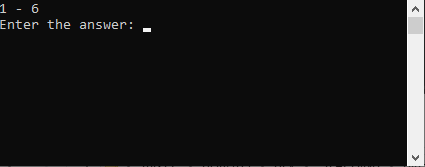

Консольные приложения C# — это простейший способ взаимодействия с программой.
Консоль поддерживает вывод на экран при помощи инструкции:
Console.Write("некое сообщение из программы будет показано на экране");Или можно добавить суффикс "Line", чтобы после вывода строки произошёл перенос на следующую строку
Console.Write("некое сообщение из программы будет показано на экране, а потом курсор сместится на следующую строку");Консоль поддерживает ввод в программу при помощи инструкции
Console.ReadLine();Так можно получить значение типа строка.
Далее её можно сравнивать, хранить, отправлять, записывать в файл, и так далее
Консоль - самый непосредственный интерфейс доступа к программе. Интерфейс - это возможность взаимодействия. Помимо консоли существуют также графический, веб-интерфейс, голосовой интерфейс или доступ через API. Естественно, эти варианты сложнее